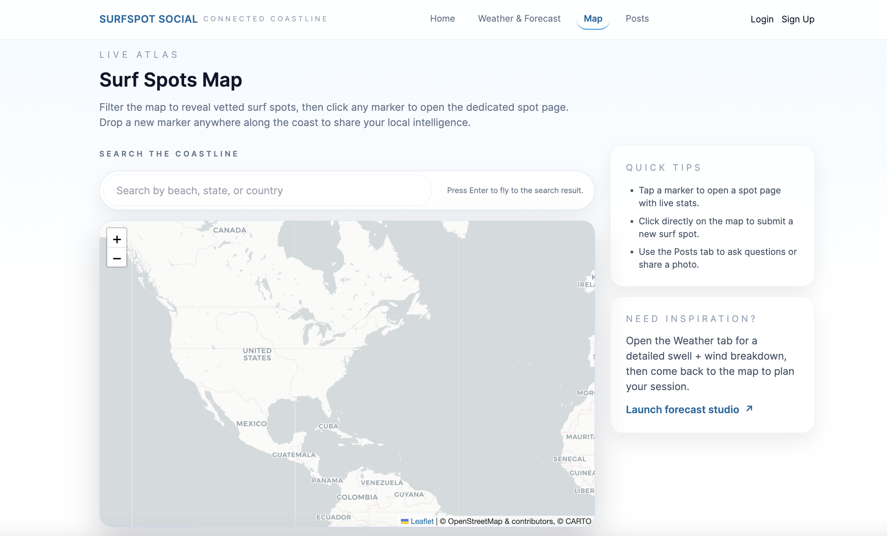
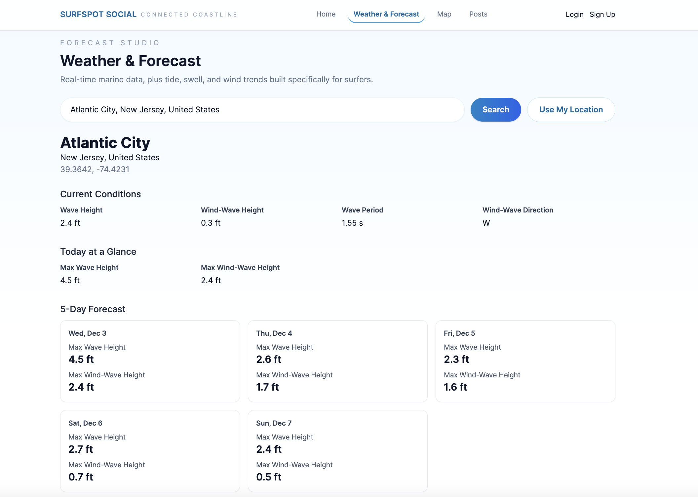
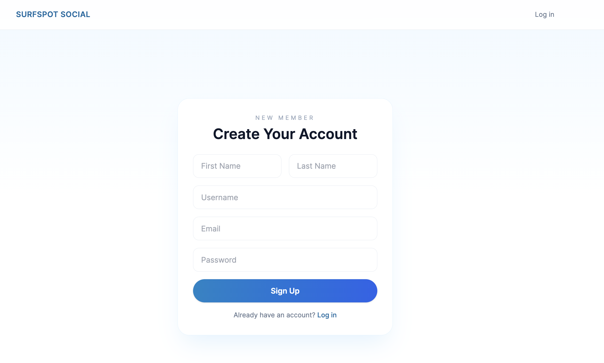

Interactive Surf Map
Powered by Leaflet.js, enabling users to explore surf spots by clicking markers on a global map.
Web Application · Surfing · Community
SurfSpot Social is a community focused surf platform that blends real-time marine weather, interactive maps, and collaborative beach notes all designed to help surfers explore safely, connect locally, and share knowledge.
SurfSpot Social brings together surf forecasting, mapping, and community insights into a single clean, accessible interface. Surfers can browse beaches, check conditions, and read or share location-specific notes.
We focused on a lightweight user experience, one where condition data loads instantly, maps remain interactive, and posts feel personal yet structured. This project was developed as a full-stack learning experience combining APIs, database design, and UI workflow design.
Powered by Leaflet.js, enabling users to explore surf spots by clicking markers on a global map.
Open-Meteo Marine API provides swell height, wind speed, water temperature, and tide levels.
Each beach has a dedicated comment hub where surfers share tips, warnings, and local insights.
Users can sign up, log in, and manage posts with secure, cookie-based authentication.


Click markers to access real-time weather and user notes.

Data-rich layout showing weather, swell, and surfer commentary.

Simple entry into the app’s posting and saving features.